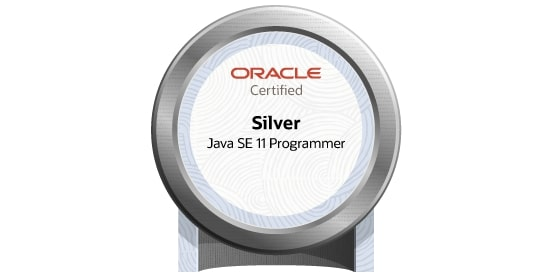

♥このブログについて
インターネット上に私だけの世界を作ってみたいなと思って始めてみます。
技術の話や資格の合格体験記とか載せてこう思っています。
とテックブログにしては珍しく、ピンクできらきらでかわいい世界を作ります♡
世の中に一つくらいかわいいテックブログがあってもいいかな♪
なりたい自分になるために、頑張る私の日記です。応援してね💕
♥自己紹介
彼氏が欲しい普通の女の子です。
♥経歴
| どこで | どうした | 学んだこと |
| 普通の公立高校 | 卒業 | |
| 四谷学院 | 浪人 | 数学とか |
| 日本大学 | 入学 | 物理 |
| 長期インターン | java , C# | |
| プログラマーのバイト | C# | |
| 研究 | python , shellScript | |
| 卒業 | ||
| 普通の会社 | 入社 | java |
♥資格
・ITパスポート試験
・OCJP(通称：java Silver)
